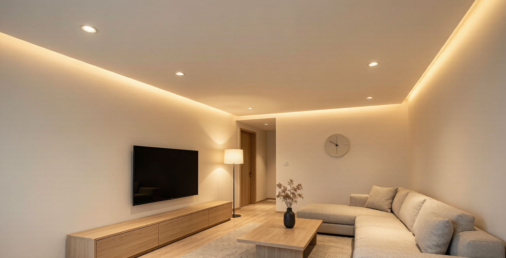

最近小红书"无主灯翻车现场"合集又火了一波——射灯嗡嗡响、调光一路闪、智能联动掉线、关灯后灯带微亮……十个翻车八个都出在驱动电源这一环。再加上 2026 年 4 月发布的 GB 30255-2026《室内照明用 LED 产品能效限定值及能效等级》将于 2027 年 9 月强制实施，整个行业的能效门槛被整体拉高。
这篇文章从装修业主和工程商两个视角，把无主灯驱动选型最容易踩的 6 个坑一次说透。
一、先看新国标到底改了什么
GB 30255-2026 是在 2019 版基础上的"全面收紧"，核心变化有四点：
- 覆盖范围扩大：小光束角筒灯（射灯）、高天棚灯、可调光调色智能灯具全部纳入能效标准。
- 能效等级提升：3 级准入门槛上调，2 级节能产品区分度更大，光效不再是"过了就行"。
- 新增待机能耗要求：智能灯具待机功率 ≤ 0.3W（旧标准 1.5W），倒逼驱动方案重做。
- 高端产品修正系数：高显色（Ra≥90）、防眩、智能调控类产品有能效修正，给优质产品留通道。
对消费者最直接的影响：从 2026 年起，任何宣传"待机 1W 以内"的智能射灯都只是合规线，真正的省电标杆要往 0.3W 看齐。
二、6 个最容易踩的坑
坑 1：只看功率，不看光效（lm/W）
装修业主最容易问"这个灯多少瓦"，但 12W 的射灯和 12W 的射灯光效可能差 30%。新国标 3 级光效门槛按产品类型分 60~115 lm/W 不等，低于门槛的不能贴能效标识。建议优先选标注 lm/W 的产品，同功率下越高越省电。
坑 2：调光"兼容"≠"真能调"
这是小红书"调光一路闪"翻车帖的高频词。很多廉价驱动标称"0-10V 兼容"或"DALI 可选"，但实际只是预留了接口，硬件层面根本没做对数曲线调光，结果就是：
- 低亮度区间不亮（关不掉）；
- 中段出现频闪（手机摄像头能拍出来）；
- 智能音箱联动时频繁掉线。
判断方法：让供应商提供 1% 调光深度下的波形图和频闪百分比，或者直接选带 IEEE 1789 无频闪认证的驱动方案。
坑 3：驱动功率 = 灯具功率 × 110%
行业经验是按 110% 系数配驱动（比如灯具 60W 配 66W 驱动），预留 10% 余量延寿。但很多小厂为了省成本刚好 1:1 配置，结果：
- 满载时驱动温度飙到 80℃ 以上；
- 夏天厨卫环境直接烧坏；
- 灯具寿命从标称 3 万小时缩到 1 万小时。
工程商尤其注意：24V 灯带每 5 米要重新计算一次压降，别让驱动离灯带超过 8 米，否则末端会明显发暗。
坑 4：智能联动只看协议不看本地化执行
Zigbee、Matter、蓝牙 Mesh 都行，但真正决定体验的是本地化执行——断网时场景能不能照常跑。
- 廉价方案：所有逻辑在云端，断网 = 全屋失控。
- 靠谱方案：网关本地场景编排（HomeKit、Matter over Thread、米家中枢），断网时关键场景（回家/观影/起夜）继续生效。
采购前问一句："这个驱动断网后场景还能跑吗？" 能现场演示的才靠谱。
坑 5：忽略防眩结构对光源的要求
无主灯的高级感一半在防眩。深杯 + 黑光 灯具对光源的指向性要求更高，但很多驱动为了过 EMC 滤波把电流调得很"硬"，结果就是光斑边缘出现明显色差（黄边/蓝边）。这是驱动纹波太大的表现，专业术语叫 频闪比（SVM），家用 SVM > 1.0 就明显了。
选购时认准 SVM ≤ 0.4 或 IEEE 1789 风险等级"无风险" 标识。
坑 6：售后质保藏在角落
驱动电源不像 LED 光源那么显眼，出了问题排查又费劲。靠谱厂商会把驱动质保单独写进合同（通常 3~5 年），并且提供现场更换服务。装修业主签合同前要逐字看条款；工程商拿不到书面质保的不要上项目。
三、给装修业主的 3 条速查清单
- 看能效标识：新国标 3 级起步，预算够直接上 2 级。
- 看调光深度：要 1% 以下无极调光，不要"看起来能调"。
- 看质保年限：驱动单独 5 年质保是及格线，3 年以下慎选。
四、给工程商的项目选型 SOP
项目需求确认 → 灯具清单 → 驱动功率 110% 配 → 调光协议确认
→ 频闪 SVM ≤ 0.4 测试 → 待机功耗 ≤ 0.3W 测试
→ 7 天老化测试 → 验收
别省老化——新批次驱动抽 10% 满载 72 小时老化，能在出厂前炸掉 80% 的早期失效品。
写在最后
无主灯翻车翻的不只是"光不对"，更是一个驱动 + 协议 + 调光 + 售后的系统工程。GB 30255-2026 的强制实施会淘汰一批小厂，对认真做产品的厂商是利好。
如果你正在选型或者翻车过，欢迎评论区聊——我们做 NEXLAMP 智能驱动器 11 年，最清楚什么样的驱动能扛住 5 年质保。
——刘先生（13825496855 · nexlamp.com）